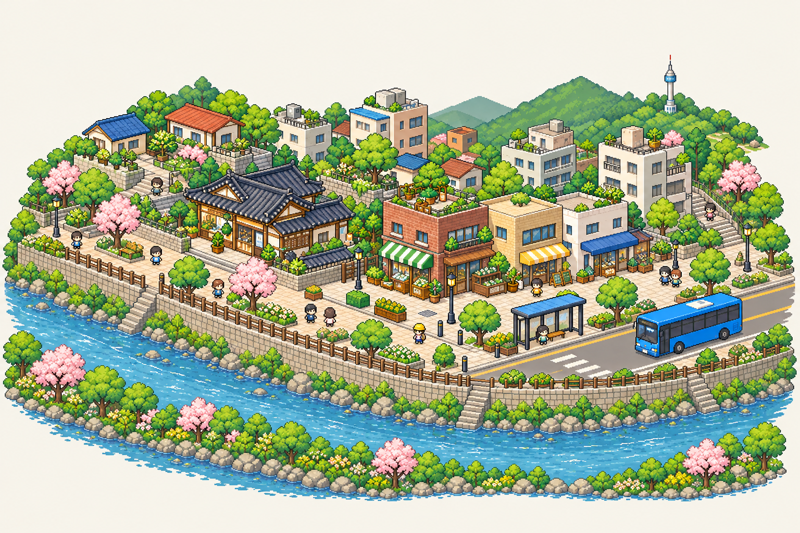

TIME FLOWS. CHOICES MATTER.
한국인
시뮬레이션.
삶은 저절로 흘러갑니다.
어떤 순간에는, 당신의 선택을 기다립니다.

출생도시 추첨 → 게임 시작 → 0세부터 자동 진행
대한민국 어딘가에서
어디에서 태어날까요?
당신의 첫 번째 주소추첨 확률 · 평균 조출생률 기준
평균 조출생률 · 주민 1,000명당
이 도시를 알아보면
· 확률 계산과 집계 기준
2025년 통계 구역을 사용합니다. 특별·광역시는 구·군 단위, 일반 도는 시·군 단위이며 세종은 1곳, 제주는 행정시 2곳입니다. 인천은 기존 중구·동구·서구를 포함합니다.
부상 대응을 선택할 때까지 시간은 멈춰 있어요.
선택할 때까지 시간은 멈춰 있어요.
몸 상태
부상·회복 기록
건강
만족
배움
관계
A LIFE, IN YOUR OWN WORDS
삶을 돌아보며